application2_covid19_analysis.Rmd
library(MSB104TimeSeriesJIH)
library(ggplot2)
library(dplyr)
#>
#> Attaching package: 'dplyr'
#> The following objects are masked from 'package:stats':
#>
#> filter, lag
#> The following objects are masked from 'package:base':
#>
#> intersect, setdiff, setequal, union
a
#> [[1]]
#> Warning: Removed 131 rows containing missing values (geom_point).
#> Warning: Removed 58 row(s) containing missing values (geom_path).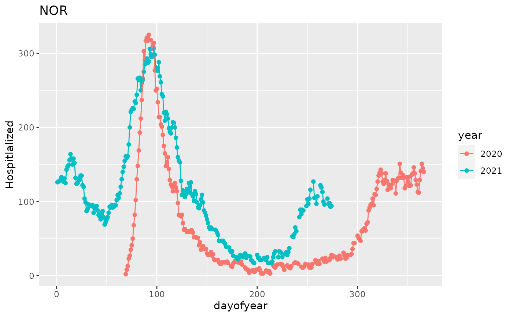
#>
#> [[2]]
#> Warning: Removed 33 rows containing missing values (geom_point).
#> Warning: Removed 33 row(s) containing missing values (geom_path).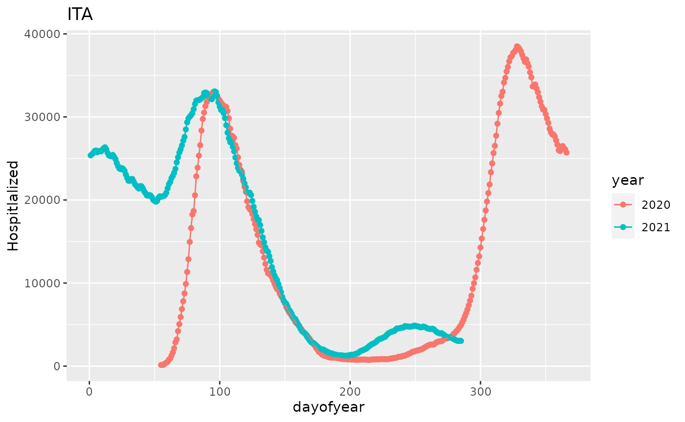
#>
#> [[3]]
#> Warning: Removed 45 rows containing missing values (geom_point).
#> Warning: Removed 45 row(s) containing missing values (geom_path).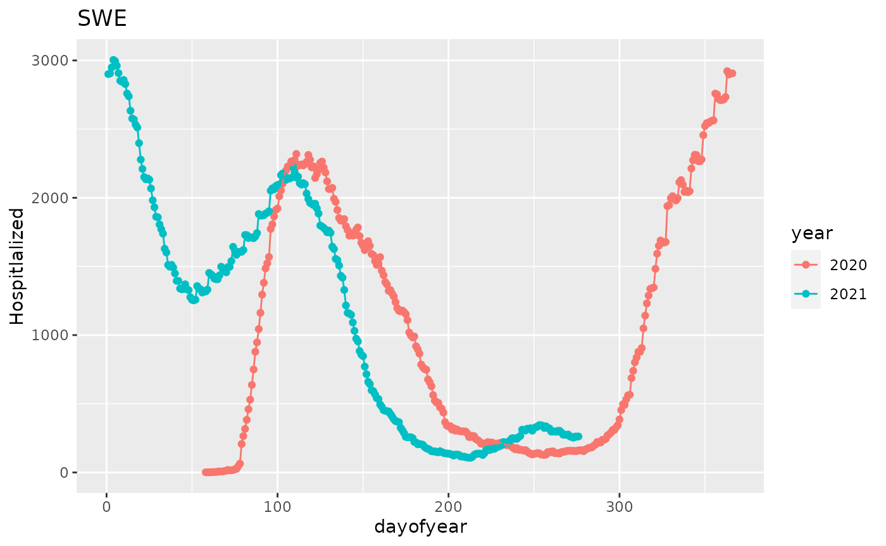
#>
#> [[4]]
#> Warning: Removed 69 rows containing missing values (geom_point).
#> Warning: Removed 69 row(s) containing missing values (geom_path).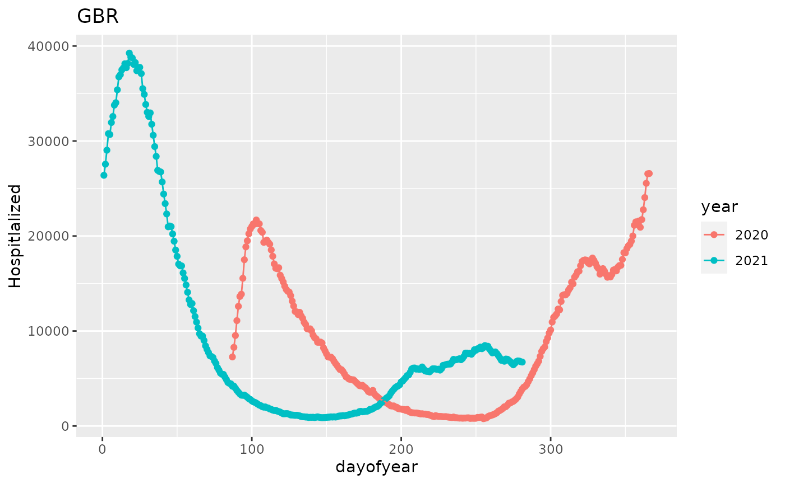
#>
#> [[5]]
#> Warning: Removed 40 rows containing missing values (geom_point).
#> Warning: Removed 40 row(s) containing missing values (geom_path).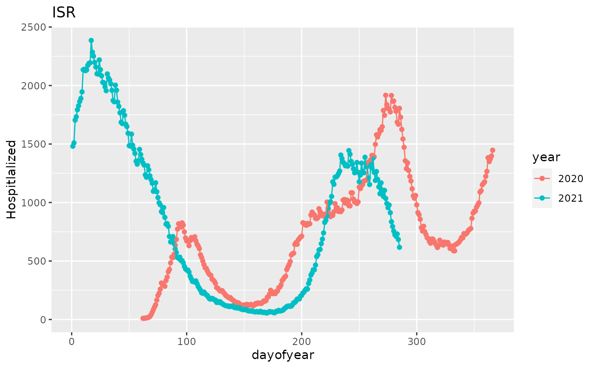
#>
#> [[6]]
#> Warning: Removed 246 rows containing missing values (geom_point).
#> Warning: Removed 75 row(s) containing missing values (geom_path).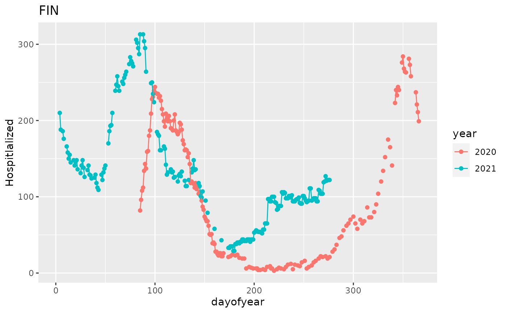
#>
#> [[7]]
#> Warning: Removed 58 rows containing missing values (geom_point).
#> Warning: Removed 58 row(s) containing missing values (geom_path).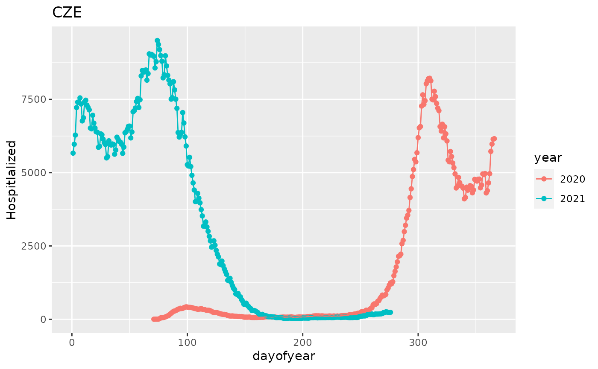
#>
#> [[8]]
#> Warning: Removed 345 rows containing missing values (geom_point).
#> Warning: Removed 225 row(s) containing missing values (geom_path).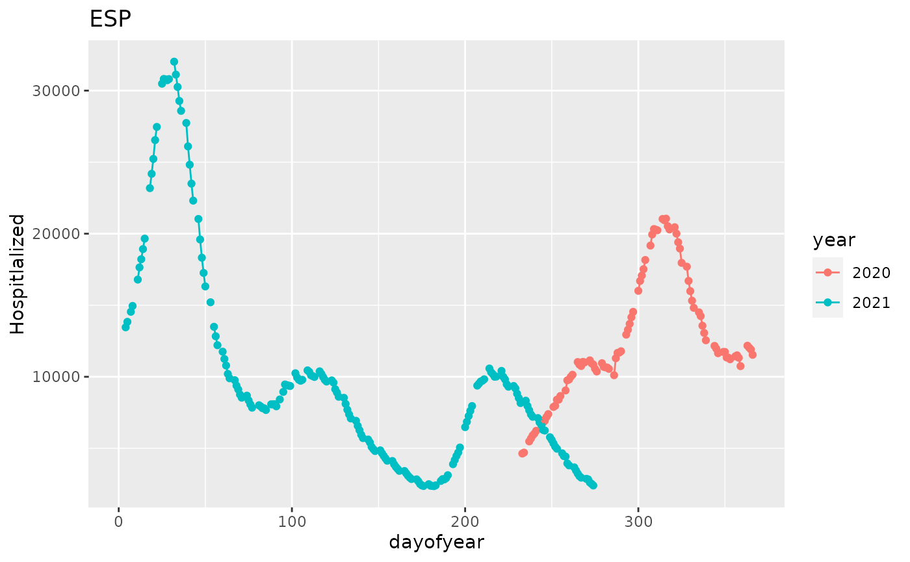
#>
#> [[9]]
#> Warning: Removed 176 rows containing missing values (geom_point).
#> Warning: Removed 176 row(s) containing missing values (geom_path).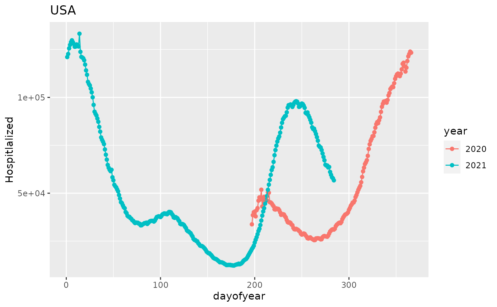
#>
#> [[10]]
#> Warning: Removed 48 rows containing missing values (geom_point).
#> Warning: Removed 48 row(s) containing missing values (geom_path).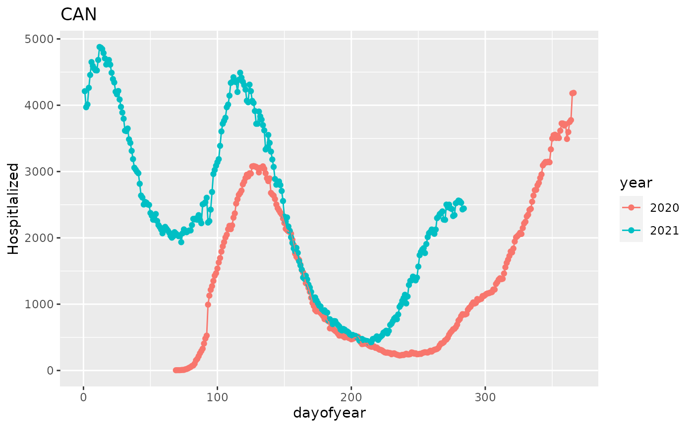
#>
#> [[11]]
#> Warning: Removed 103 rows containing missing values (geom_point).
#> Warning: Removed 102 row(s) containing missing values (geom_path).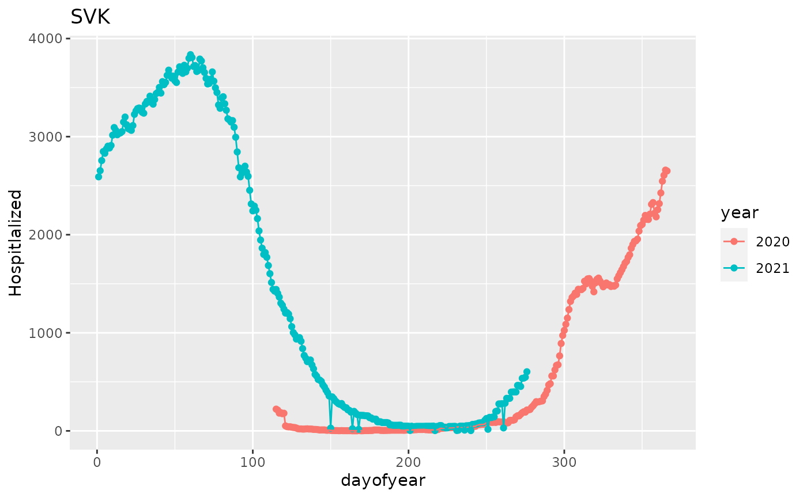